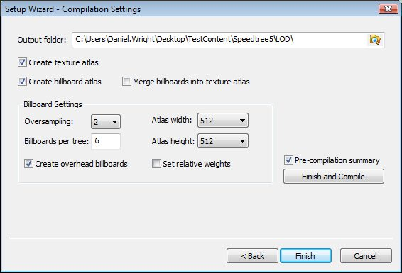
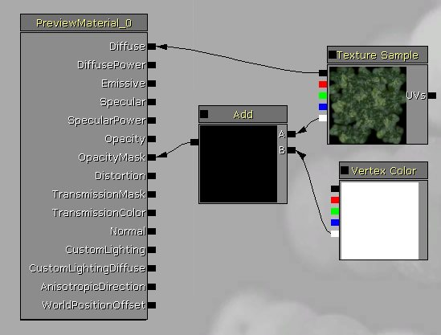

UDN
Search public documentation:
SpeedTreeCH
English Translation
日本語訳
한국어
Interested in the Unreal Engine?
Visit the Unreal Technology site.
Looking for jobs and company info?
Check out the Epic games site.
Questions about support via UDN?
Contact the UDN Staff
日本語訳
한국어
Interested in the Unreal Engine?
Visit the Unreal Technology site.
Looking for jobs and company info?
Check out the Epic games site.
Questions about support via UDN?
Contact the UDN Staff
Speed Tree
文档概要：如何使用编辑器中的SpeedTree Actors，本文更新包含了针对Speedtree5的信息。 文档变更记录: 由 Daniel Wright 创建。主要概念
Speedtree 5.0有三个组件： SpeedTree Modeler(SpeedTree建模器)、SpeedTree Compiler(SpeedTree 编译器)和针对UE3 游戏/编辑器的集成。在建模器中，您可以反复修整树的形状、风、和碰撞。建模器通过使用额外的应用程序进行渲染，可能和您在UE3中获得渲染方式不相匹配。建模器导出.SPM文件，仅编译器可以读取该文件。编译器获得.SPM文件并生成texture atlases(贴图图集)、顶点数据和关于树的其他信息。它将会把出贴图之外的所有东西都保存到一个.SRT文件中，稍后您会将该文件导入到UE3中。 对于美工人员来说： 请一定要阅读来自IDV的文档 ,链接如下：%speedtree apps folder%/Content/Tools/5.0/SpeedTree_Applications_v5.0_Full/Documentation 对于程序员来说： 请一定要阅读IDV提供的Speedtree SDK文档。
Atlases(图集)
Speedtree会把所有贴图组合到一个atlas（图集）中。如果我们仅是把billboard(广告板)图像组合到一个atlas（图集）中，那么对于我们的游戏来说是再好不过了。这使得我们可以在多个树木之间共享树叶和树杆贴图，从而节约内存。 如果您想在Photoshop中创建您自己的树皮和树叶atlas（图集），使得多棵树木可以共享它们，那么在编译器中可以跳过生成Atlas(图集)这步。树叶
Speedtrees支持使用billboard(广告牌)作为树叶，但是这并不是非常高效，将网格物体定义为树叶或树枝组会产生更好的效果。树枝
如果树枝是网格物体而不是使用了蒙板材质的叶子类型网格物体，那么树枝的效果将会更好。使用网格物体来降低过度描画消耗，并且当它处于远处时可以对其进行优化让其消失。编译
编译非常的简单。加载您的speedtree。不要创建贴图atlas（图集），而是要创建一个billboard atlas(广告板图集)。选择完成。在左侧的窗口中，取消选中Texture Copy(贴图副本)，否则它将总是会把树上使用的地图复制到导出目录中。为atlas（图集）文件类型选择有效的文件类型(通常是.tga)。然后您可以选择 Session(会话)->Compile Now(现在编译)。LODs（细节层次级别）
Speedtree 5.0有两个或多个LOD的几何体，而最终的LOD几何体仅是个billboard(广告板)。高细节的几何体LOD根据距离和您在编辑器中的SpeedtreeActor设置的参数来变形为低细节级别的几何体LOD。然后billboard（广告板）网格门将会淡入，而低细节几何体LOD将会淡出。建模器中的LOD设置
在 'Object Properties - Tree(对象属性-树)'下，选中'Level of Detail(细节层次)'类别下的'Enabled(启用)'。将 'Count(数量)'修改为您需要的值。 将'Preview style(预览风格)'切换为'Use near and far(使用近处和远处)'，并且可以使用鼠标滚轮或者点击鼠标左键和中间按钮并拖拽来进行缩放。您可以在这个类别下改变LOD距离来预览几何体LOD变换，但是请记住您不能查看billboard(广告板)变换，您在这里设置的距离将不会再UE3中进行应用。编译器中的LOD设置
在编译器中打开您的树木之前，请确保可以在建模器中正确地加载该树木。否则编译器将不会告诉您是否有错误，但是使您花费大量精力去寻找方法。比如，如果当编译时树叶网格物体丢失了，那么导出广告板时它会偏离中心并且会部分地剪切掉。 它将会在输出窗口中通知您网格物体加载失败。 当您创建一个新的会话时并选择树木时，请在 'Compilation Settings(编译设置)'对话框中使用这些设置：
点击Finish[完成](而不是Finish and Compile[完成并编译])。 修改编译图像类型来输出tga文件，以便把它们导入到编辑器中。 如果在编辑器中当距离树木非常远时在Billboard(广告板)周围出现闪动的细微失真，就像这个屏幕截图的左上方部分所示，那么可以将Billboard（广告板）边界修改为较大的值。 最后，点击 Start Compilation(开始编译)，并跟踪查看您让编译器为下一步输出文件的地方。
最后，点击 Start Compilation(开始编译)，并跟踪查看您让编译器为下一步输出文件的地方。
UE3中的LOD设置
从编译器中导入 .SRT文件。 接下来，导入BillboardAtlas_Diffuse.tga文件，当您看到Import(导入)对话框时，选中 'Dither Mip-maps alpha（抖动mip-map alpha）'。 这将会在alpha通道上产生噪声，这将用于网格门淡入淡出billboard（广告板），同时对TextureAtlas_Diffuse.tga进行同样的处理。 如果您想让树枝进行抖动淡入淡出，那么当导入树枝贴图时可以执行同样的处理。 对于从远处不能看到树枝的地方的画刷，您可以跳过抖动过程，并使用更加高效的不透明材质。 请记住当您导入 BillboardAtlas_Normal 时选择TC_Normalmap压缩。 创建树叶的材质。 这里是在LOD可以正常工作时针对抖动淡入淡出的最小限度的设置：
speedtree运行时系统将会把一个LOD值传入到顶点颜色alpha通道中来使得这个过程正常工作。 可以使用同样的方式来设置billboard（广告板）材质。打开您导入的USpeedtree资源，并向它们分配这些新的材质。 将SpeedTreeActor放置到关卡中，设置Lod Level Override(LOD级别覆盖)为-1。使用LOD距离(3DStart等)来控制LOD的变换方式。 另一个要使用的方法是使用Speedtrees缩放和树叶及树枝的剪除。 这可以使得视觉效果更新引人，并且需要较少的材质处理。 这些选项在Speedtree建模器中设置。